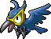

Lv. 25 · #9400000
까마귀
숲을 점거하고 있는 까마귀이다. 찾아오는 사람을 업신여기는 듯이 좌우로 날아다니면서 공격한다.
스탯
레벨 25- HP
- 550
- MP
- 20
- EXP
- 42
- 넉백 가능 데미지
- 30+
- 물리 데미지
- 90
- 마법 데미지
- 0
- 물리 방어력
- 30
- 마법 방어력
- 30
- 속도
- 15
- 25레벨 에서의 필요 명중
- 36.66
- 메소
- 187.5
- 속성관계
- 전기속성약점
- 체경비
- 13.10
- 형태
- 동물형
출현 지역
출현 맵 3개맵 이름을 누르면 메이플노트의 맵 정보가 열립니다.
드롭 테이블
전체 16개| 아이템 | 아이템 ID | 드롭 확률 |
|---|---|---|
| 까마귀 깃털 | 4000064 | 40% |
| 마나 엘릭서 | 2000006 | 2% |
| 당고 | 2022014 | 1% |
| 청동의 원석 | 4010000 | 0.4% |
| 토파즈의 원석 | 4020006 | 0.3% |
| 레드 잉그리트 | 1051011 | 0.01% |
| 빨간색 검도복 | 1050006 | 0.008% |
| 블루 가이즈 | 1002172 | 0.008% |
| 신발 점프력 주문서 60% | 2040704 | 0.008% |
| 목비 표창 | 2070002 | 0.007% |
| 라이덴 | 1452005 | 0.007% |
| 브론즈 스틸라인 | 1082032 | 0.006% |
| 냄비 뚜껑 | 1092008 | 0.006% |
| 파란색 가죽 구두 | 1072056 | 0.006% |
| 미스릴 완드 | 1372003 | 0.006% |
| 투구 방어력 주문서 10% | 2040002 | 0.006% |
조건에 맞는 드롭 아이템이 없습니다.
확률은 메이플노트에 게시된 값입니다. 아이템 이름을 누르면 원본 아이템 정보가 열립니다. 과거 버전 데이터이므로 실제 메이플랜드와 다를 수 있습니다.